第三章 编译原理
3.1 编译构建系统¶
基于轻量系统
3.1.1 编译构建系统简介¶
- OpenHarmony基于gn和ninja，以支持组件化开发为目标。
- 支持独立构建组件、开发板、组件拼接的产品。
Note
关于组件这个名称，我查看官网为部件，都是指component，系统最小功能单元。
编译构建系统用到的相关基础概念
| 名称 | 概念 |
|---|---|
| 子系统 | 子系统由一个或多个组件构成。 |
| 组件 | 组件是一个可复用、可配置、可裁剪的系统最小功能单元。 |
| ninja | ninja是一个专注速度的小型的编译构建系统。 |
| gn | gn全称为 "generate ninja"，是一个现代化编译构建工具。 |
| hb | hb是OpenHarmony的命令行工具，用于执行编译命令。 |
Note
联系一下常见的工具会更好理解，比如当我们使用STM32的Cmake开发方式时，我们的编译构建系统使用的就是Camke和ninja，此时Camke就是与gn一样的作用。
关于系统、子系统、组件的关系如下图，其中子系统和组件支持 裁剪 。
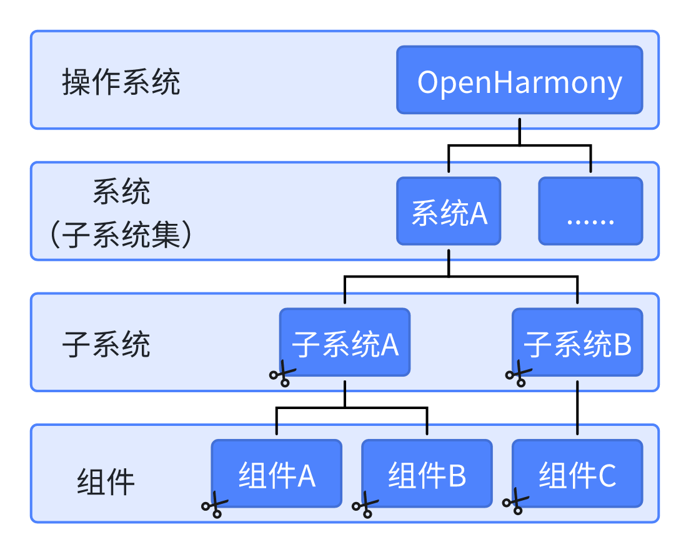
build/lite是轻量级设备（如 IoT 设备）编译构建系统的核心部分，目录主要内容如下：
build/lite
├── components # 组件描述文件
├── config # 编译配置文件
| ├── component # 组件相关模板定义
| ├── kernel # 内核的编译配置参数
| └── subsystem # 子系统的编译配置模板
├── figures # readme的图片
├── hb # hb的pip安装包源码
├── make_rootfs # 文件系统镜像制作脚本
├── ndk # Native API相关编译脚本与配置参数
├── testfwk # 测试编译框架
└── toolchain # 编译工具链配置
在轻量系统中，一个组件不能单独编译，必须加入一个产品或开发板方案。关于前面用到的编译指令：
hb set，用于选择OpenHarmony的源码目录和要编译的目标保存至相应的配置文件中。
hb build，经历一个较为复杂的过程- 读取编译配置。根据产品选择的开发板，读取开发板的
config.gni文件。 - 调用gn。生成从产品解决方案的
out目录和ninja文件。 - 调用ninja。也就是调用“
ninja -C out/board/product”命令启动编译。 - 系统镜像文件打包。就是将组件编译产物进行打包，设置文件的属性和权限，制作文件系统的镜像文件。
- 读取编译配置。根据产品选择的开发板，读取开发板的
关于系统镜像文件打包简单理解就是生成
.bin二进制烧录文件。
3.1.2 编译构建系统的配置规则¶
Danger
这里很重要也很难，若此部分不理解，建议购买书籍阅读。
1. 源码的命名规则¶
- 一个组件一个单独的文件夹。
- 组件源码分为三层，最外层为领域，也称为子系统集，内层依次为子系统和组件
2. 源码目录树的构建规则¶
- 组件的目录结构应如下：
component
├── interfaces # 接口
| ├── innerkits # 系统内接口，供组件开发者使用
| └── kits # 应用接口，供应用开发者使用
├── frameworks # framework的实现
├── services # service的实现
└── BUILD.gn # 组件的编译脚本
- 以IOT外围设备控制组件为例
IOT外围设备控制 组件 从属于IOT专用硬件服务 子系统 ，IOT专用硬件服务子系统又从属于硬件服务 子系统集 。
- 硬件服务子系统集的位置在源码的
base目录。 - IOT专用硬件服务子系统的位置在
base\iot_hardware目录。 - IOT外围设备控制组件位置就在
base\iot_hardware\peripheral目录。
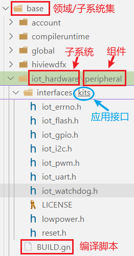
由此领域即子系统集、子系统、组件的目录结构就很明了了。 进一步剖析目录，在interfaces下有kits目录提供了应用接口，供应用开发者使用；注意BUILD.gn位于组件peripheral的根目录下，即为这个组件的编译脚本。
3. 组件的定义¶
- 新建好一个组件后，我们需要将其定义到OpenHarmony系统中。而组件定义的位置就在
build\lite\components目录下的.json文件。
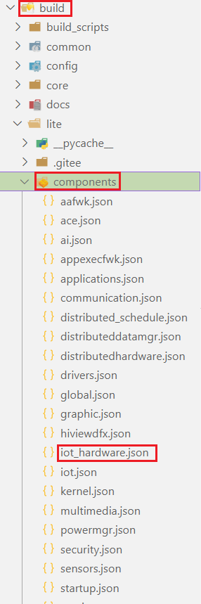
- 组件必须注册到 子系统 中。然后，需要把组件的基本信息告诉子系统就完成了组件的定义。
以下就是iot_hardware.json文件的全部定义：
{
"components": [ // 全部组件
{ // 单个组件定义
"component": "iot_controller", // 组件名称
"description": "Iot peripheral controller.", // 组件的功能描述
"optional": "false", // 组件是否为最小系统必选
"dirs": [ "base/iot_hardware/peripheral"], // 组件源码目录
"targets": ["//base/iot_hardware/peripheral:iothardware"],// 组件编译目标
"output": [], // 组件编译输出
"rom": "", // 组件的ROM容量
"ram": "", // 组件的RAM容量
"adapted_kernel": ["liteos_m"], // 组件已适配的内核
"features": [], // 组件可配置的特性
"deps": { // 组件依赖
"components": [], // 组件依赖的其他组件
"third_party": [] // 组件依赖的第三方开源软件
}
}
]
}
4. 组件的编译目标¶
- 编译入口其实就是组件的
targets参数，格式约束如此"targets":["路径:目标名称"]。其中 路径 以绝对路径表示，//开头，以源码根目录开始， 目标名称 由路径下的BUILD.gn文件定义。 - OpenHarmony的编译构建系统会通过这个路径找到目标的
BUILD.gn文件，然后根据目标名称，按照这部分的要求进行编译。
5. 组件的编译脚本¶
以下是几种基础语法，更多可参考OpenHarmony官方关于gn介绍或谷歌官网。
- 编译结果类型
executable，生成可执行文件，.bin文件。shared_library，生成动态链接库，.so文件。static_library，生成静态链接库，.a文件。source_set，生成中间目标，仅用于编译源文件，不生成最终的二进制文件或库。group，聚合多个目标，无直接产物。
- 目标：编译 目标名称 ，与
targets参数的目标名称一致，官方建议与组件名称一致。 - sources：需要编译的源文件列表，即由逗号隔开的多个
.c文件。 - include_dirs：头文件的路径列表，即逗号隔开的头文件所在位置，绝对路径或相对路径。
BUILD.gn模板
IOT外围设备控制组件为例，目标如下"targets": ["//base/iot_hardware/peripheral:iothardware"]，找到一个名为 iothardware 的目标组。
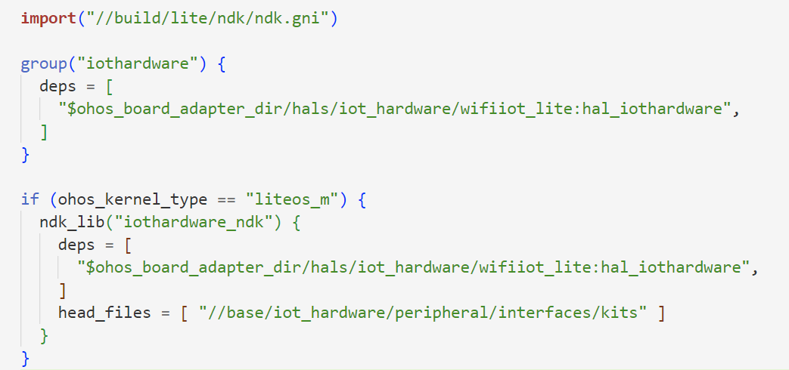
注意$ohos_board_adapter_dir代指的目录为device\hisilicon\hispark_pegasus\hi3861_adapter，则在device\hisilicon\hispark_pegasus\hi3861_adapter\hals\iot_hardware\wifiiot_lite:hal_iothardware下找到另一个BUILD.gn文件。编译类型为静态库，会编译sources下的.c文件，include_dirs为保护的头文件。
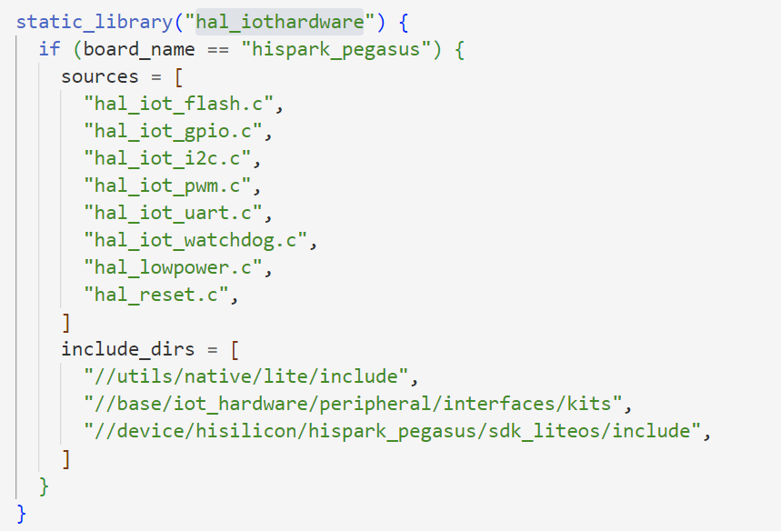
再举一个例子"targets": ["//utils/native/lite/kv_store"]，找到BUILG.gn文件。
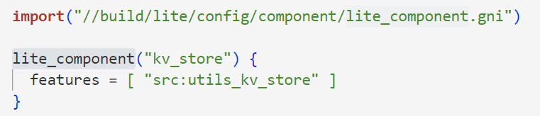
这个脚本通过lite_component的feature方式指向utils\native\lite\kv_store\src目录下的BUILG.gn文件
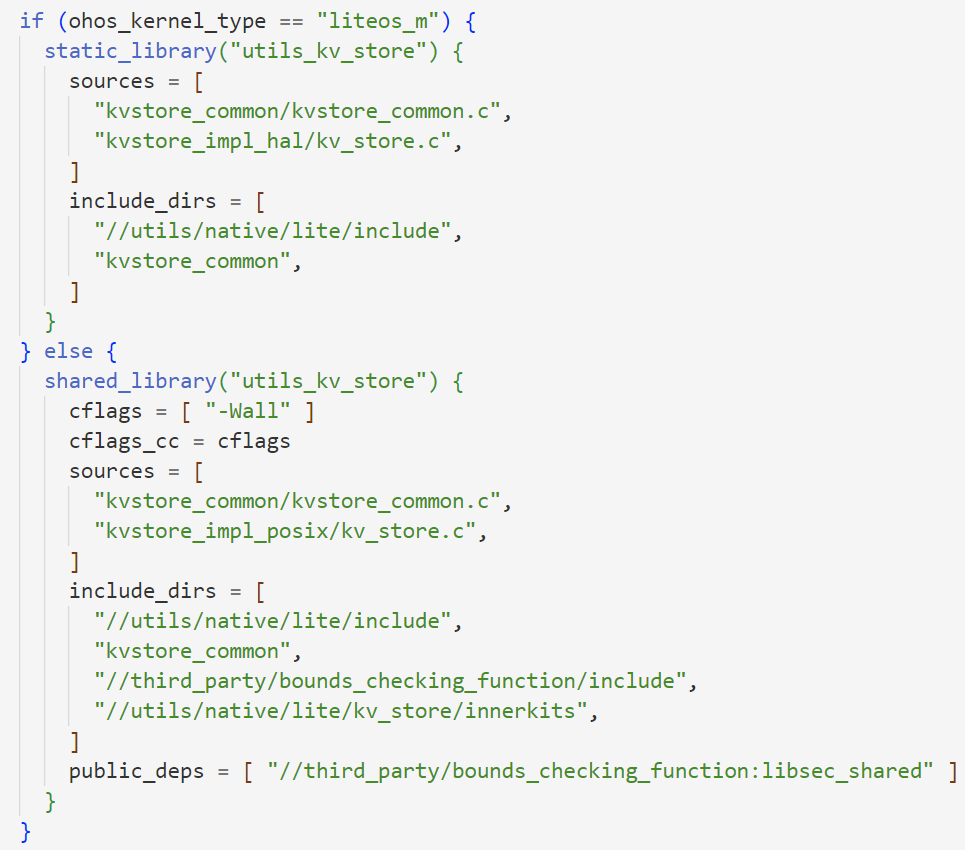
再看一个，`utils\native\lite目录下的BUILD.gn文件
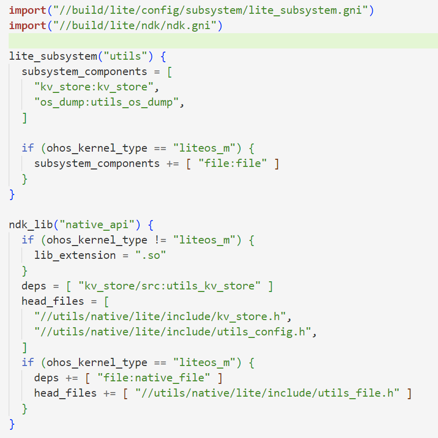
这个编译脚本负责整个lite子系统的编译，通过subsystem_components指向组件，其中kv_store:kv_store便是上一个示例所看的组件。
3.1.3 子系统构建模型¶
除了lite_component 和 lite_subsystem ，从子系统定义追踪还可以找到如group这样的定义个人理解用法相似。然更多关于gn语法可以去官方编译构建系统指导了解学习。
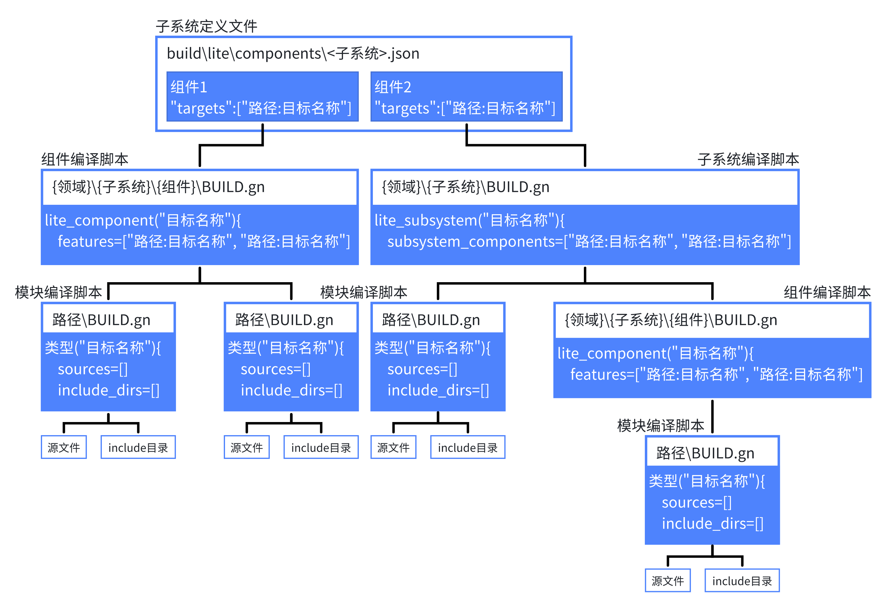
3.1.4 芯片解决方案配置规则¶
- 芯片解决方案是指基于某款开发板的完整解决方案，包含驱动、设备侧接口适配、开发板sdk等。
- 芯片解决方案是一个特殊的部件，源码路径规则为：device/{开发板}/{芯片解决方案厂商}。
- 芯片解决方案部件会随产品选择的开发板默认编译。
- 芯片解决方案目录树规则如下：
device
└── board
└── company # 芯片解决方案厂商
└── hispark_aries # 开发板名称
├── BUILD.gn # 编译脚本
├── hals # OS南向接口适配
├── linux # 可选，linux内核版本
│ └── config.gni # linux版本编译配置
└── liteos_a # 可选，liteos内核版本
└── config.gni # liteos_a版本编译配置
注意：config.gni为开发板编译相关的配置，编译时会采用该配置文件中的参数编译所有OS部件，编译阶段系统全局可见。
- config.gni的关键字段介绍如下：
kernel_type: 开发板使用的内核类型，例如：“liteos_a”, “liteos_m”, “linux”。
kernel_version: 开发使用的内核版本，例如：“4.19”。
board_cpu: 开发板CPU类型，例如：“cortex-a7”, “riscv32”。
board_arch: 开发芯片arch, 例如： “armv7-a”, “rv32imac”。
board_toolchain: 开发板自定义的编译工具链名称，例如：“gcc-arm-none-eabi”。若为空，则使用默认为ohos-clang。
board_toolchain_prefix：编译工具链前缀，例如：“gcc-arm-none-eabi”。
board_toolchain_type： 编译工具链类型，目前支持gcc和clang。例如：“gcc” ，“clang”。
board_cflags： 开发板配置的c文件编译选项。
board_cxx_flags： 开发板配置的cpp文件编译选项。
board_ld_flags： 开发板配置的链接选项。
3.1.5 产品解决方案配置规则¶
产品解决方案为基于开发板的完整产品，主要包含产品对OS的适配、部件拼装配置、启动配置和文件系统配置等。产品解决方案的源码路径规则为： vendor/{产品解决方案厂商}/{产品名称} 。
产品解决方案的目录树规则如下：
vendor
└── company # 产品解决方案厂商
├── product # 产品名称
│ ├── init_configs
│ │ ├── etc # init进程启动配置（可选，仅linux内核需要）
│ │ └── init.cfg # 系统服务启动配置
│ ├── hals # 产品解决方案OS适配
│ ├── BUILD.gn # 产品编译脚本
│ └── config.json # 产品配置文件
│ └── fs.yml # 文件系统打包配置
└── ......
vendor/company/product/config.json为编译构建的主入口，包含了开发板、OS部件和内核等配置信息。
以基于hispark_taurus开发板的ipcamera产品为例，配置文件如下：
{
"product_name": "ipcamera", # 产品名称
"version": "3.0", # config.json的版本号, 固定"3.0"
"type": "small", # 系统类型, 可选[mini, small, standard]
"ohos_version": "OpenHarmony 1.0", # 选择的OS版本
"device_company": "hisilicon", # 芯片厂商
"board": "hispark_taurus", # 开发板名称
"kernel_type": "liteos_a", # 选择的内核类型
"kernel_version": "3.0.0", # 选择的内核版本
"subsystems": [
{
"subsystem": "aafwk", # 选择的子系统
"components": [
{
"component": "ability",
"features":[ "enable_ohos_appexecfwk_feature_ability = true" ] } # 选择的部件和部件特性配置
]
},
{
......
}
......
更多子系统和部件
}
}
我们通过hb set就是选择产品解决方案。
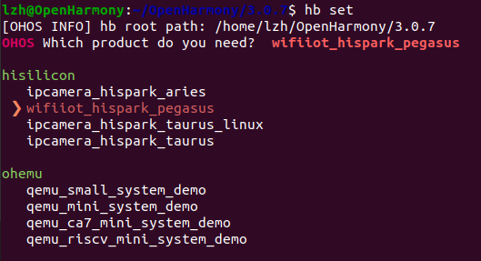
3.2 编译构建系统的使用¶
3.2.1 案例1：新增组件¶
在applications\sample目录新建component_demo文件夹，在该文件夹下新建demo.c和BUILD.gn文件，并编写下列源码：
demo.c
/* 新增组件示例 */
# include <stdio.h>
// OpenHarmony特有头文件
# include "ohos_init.h"
// 定义函数
void entry(void)
{
printf("This is a component.\r\n");
}
// 让entry函数在系统启动的第四阶段即system startup阶段，以优先级为 2 的级别执行
SYS_RUN(entry);
BUILD.gn
static_library("TestComponent") {
sources = [
"demo.c"
]
include_dirs = [
# 保护 "ohos_init.h" 等头文件
"//utils/native/lite/include",
]
}
单独编译该目标
添加组件到子系统中，在\build\lite\components\applications.json文件：
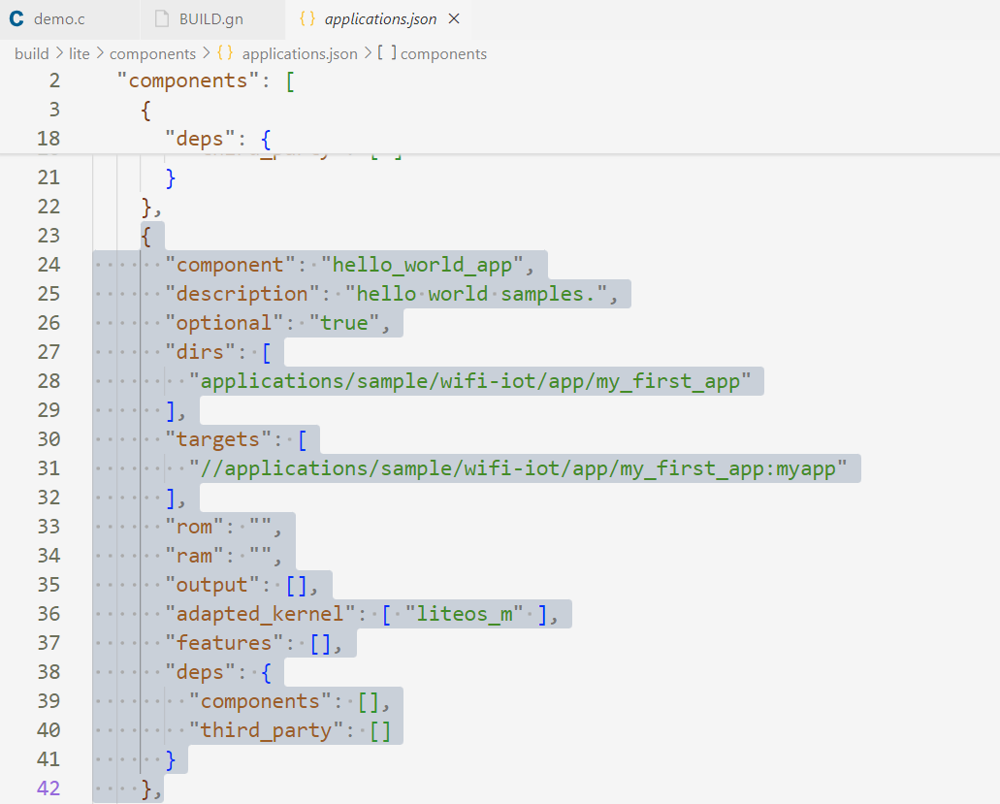
可以看到这里有我们的 ”第一个程序“ 时添加的hello_world_app组件，可以在其下方继续添加我们的示例组件：
{
"component": "TestComponent",
"description": "A test component.",
"optional": "true",
"dirs": [
"applications/sample/component_demo"
],
"targets": [
"//applications/sample/component_demo:TestComponent"
],
"rom": "",
"ram": "",
"output": [],
"adapted_kernel": [ "liteos_m" ],
"features": [],
"deps": {
"components": [],
"third_party": []
}
},
将组件配置到产品解决方案中，即hispark_pegasus，在\vendor\hisilicon\hispark_pegasus\config.json文件，找到applications子系统。
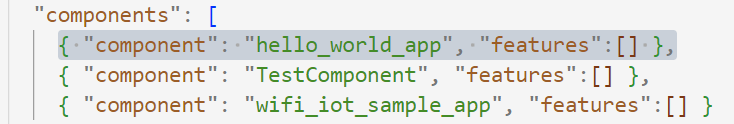
同样有我们 ”第一个程序“ 的身影，在下方添加测试组件：
单独编译组件
单独编译的目标或组件不能独立运行，但容易发现错误，我们需要编译整个固件才能烧录运行。
烧录运行，由于我有一个之前的程序没关，所以下方还有一个[love].输出
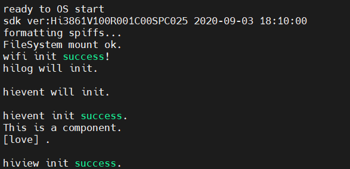
3.2.2 案例2：新增产品解决方案¶
OpenHarmony的编译构建系统支持芯片解决方案和部件的灵活拼装，形成定制化的产品解决方案。在 vendor/{产品解决方案厂商}/{产品名称} 目录下，新建vendor\cim\product1目录，在vendor\hisilicon\hispark_pegasus基础上修改，复制hispark_pegasus下的config.json至vendor\cim\product1目录，按需裁剪子系统和组件，将最下方参数product_adapter_dir修改为 //vendor/cim/product1/hals。
{
"product_name": "cim_product",
"ohos_version": "OpenHarmony 1.0",
"device_company": "cim",
"board": "hispark_pegasus",
"kernel_type": "liteos_m",
"kernel_version": "",
"subsystems": [
{
"subsystem": "applications",
"components": [
{ "component": "hello_world_app", "features":[] }
]
},
...
{
更多子系统和部件
}
],
"third_party_dir": "",
"product_adapter_dir": ""
}
Danger
官方声明 ：编译构建系统编译前会对device_company，board，kernel_type，kernel_version、subsystem、component字段进行有效性检查，其中device_company，board，kernel_type，kernel_version应与已知的芯片解决方案匹配，subsystem、component应与build/lite/components下的部件描述匹配。
适配OS接口，在产品目录下创建hals目录，并将产品解决方案对OS适配的源码和编译脚本放入hals目录下。可以将复hispark_pegasus产品想应的文件夹，
新建vendor\cim\product1\BUILD.gn文件，
编译产品
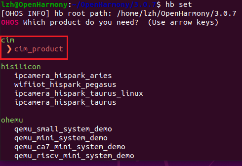
烧录运行一切正常
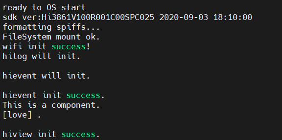
3.2.3 案例3：组件/模块开发¶
本案例目标是：实现子系统applications的wifi_iot_sample_app组件。
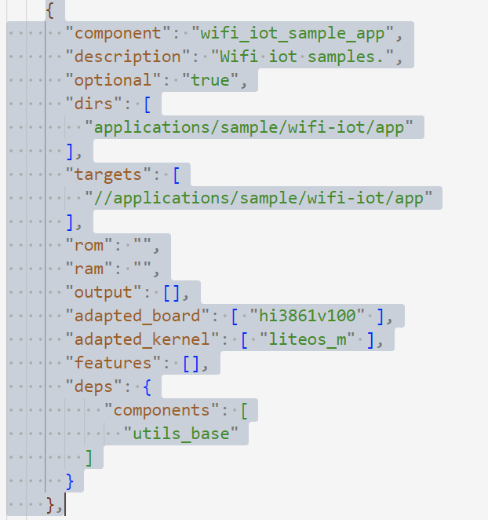
Danger
个人理解：判断子系统和组件不能单看文件夹层级，应首先关注build\lite\components目录下的.json文件均是子系统，故application是子系统而非领域或者说子系统集，在application.json中定义有wifi_iot_sample_app组件。
分析APP架构：
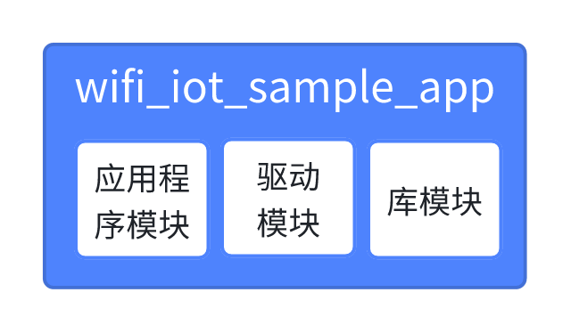zai
1. APP架构与代码¶
新建\applications\sample\wifi-iot\app\gn_practice目录，在gn_practice文件夹下新建application、driver、library，分别存放应用程序模块、驱动模块、库模块，最终目录结构：
├── application
│ ├── app_main.c
│ ├── component_1.c
│ ├── component_1.h
│ ├── component_2.c
│ └── component_2.h
├── driver
│ ├── drv_1.c
│ └── drv_1.h
└── library
├── lib_1.c
├── lib_1.h
├── lib_2.c
└── lib_2.h
component_1.c
component_2.c
drv_1.c
lib_1.c
lib_2.c
component_1.h、component_2.h、drv_1.h、lib_1.h、lib_2.h均为空，无代码。
最后，app_main.c
# include <stdio.h>
# include "ohos_init.h"
# include "component_1.h"
# include "component_2.h"
# include "../driver/drv_1.h"
# include "../library/lib_1.h"
# include "../library/lib_2.h"
void myapp(void){
printf("app runs!\r\n");
}
// 让myapp在系统启动的第八个阶段以优先级 2 执行
APP_FEATURE_INIT(myapp);
顺便将先前的“第一个程序”执行阶段改一下，最后看一下执行效果
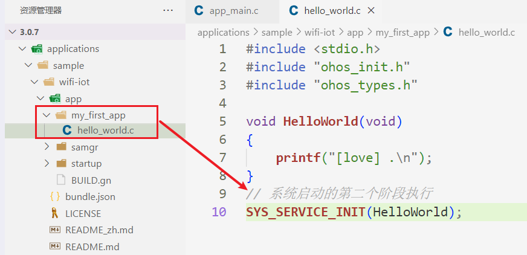
2. 编译脚本¶
新建\applications\sample\wifi-iot\app\gn_practice\application\BUILD.gn编译脚本，源码如下：
static_library("gn_app") {
sources = [
"app_main.c",
"component_1.c",
"component_2.c",
]
include_dirs = [
"../driver",
"../library",
"//utils/native/lite/include",
]
cflags = [ "-Wno-unused-variable" ]
cflags += [ "-Wno-unused-but-set-variable" ]
cflags += [ "-Wno-unused-parameter" ]
}
看完编译构建系统部分后，sources和include_dirs部分应该不难理解，而后面三行是编译参数，意思分别为 “未使用的变量” 、 “以初始化未使用的变量” 、 “未使用的参数” ，这三种情况默认编译方式并不允许。
新建\applications\sample\wifi-iot\app\gn_practice\driver\BUILD.gn编译脚本，源码如下：
static_library("gn_driver") {
sources = [
"drv_1.c",
]
include_dirs = [
"//utils/native/lite/include",
]
}
新建\applications\sample\wifi-iot\app\gn_practice\library\BUILD.gn编译脚本，源码如下：
static_library("gn_library") {
sources = [
"lib_1.c",
"lib_2.c"
]
include_dirs = [
"//utils/native/lite/include",
]
}
以上编写的模块是基于wifi_iot_sample_app组件，在\build\lite\components\applications.json文件中找到组件。
通过参数targets可以看到编译目标是/applications/sample/wifi-iot/app"目录下的BUILD.gn文件，它的默认代码为：
import("//build/lite/config/component/lite_component.gni")
lite_component("app") {
features = [
"startup",
]
}
将其修改为如下内容，这样OpenHarmony的编译构建系统就会找到各个模块下的BUILD.gn文件，然后根据BUILD.gn文件目标编译。
import("//build/lite/config/component/lite_component.gni")
lite_component("app") {
features = [
"gn_practice/application:gn_app",
"gn_practice/driver:gn_driver",
"gn_practice/library:gn_library",
]
}
3. 编译烧录运行¶
编译产品
烧录运行，可以看到，打印信息按照系统启动阶段正确划分。
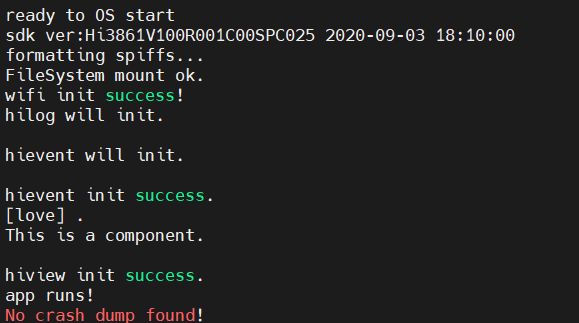
3.2.4 系统启动阶段与宏命令¶
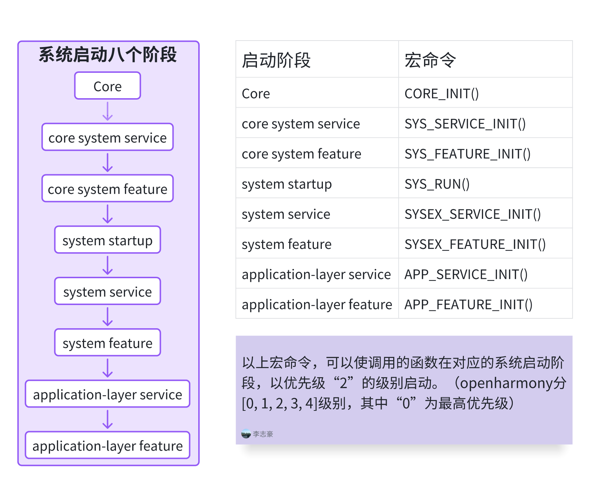
3.3 轻量系统的数据持久化¶
3.3.1 数据持久化简介¶
数据持久化 是指将 内存中的数据模型 转换为 存储模型 ，以及将 存储模型 转换回 内存数据模型 的过程。其主要目的是让数据在程序关闭或系统重启后依然可以保存和恢复。
数据模型 ：通常是程序运行时使用的对象模型或数据结构（如类、对象、字典、数组）。
存储模型 ：指数据在持久化介质上的表现形式，可以是：
- 关系模型（如数据库中的表）
- XML、JSON 等格式化数据
- 键值对（如 Redis、分布式 KV 存储）
- 图形模型（如图数据库）
- 二进制流 或 自定义格式
基本操作（CRUD） 数据持久化的核心操作包括：
- Create （创建）：将数据存储到持久化介质。
- Read （读取）：从持久化介质加载数据。
- Update （更新）：修改存储中的数据。
- Delete （删除）：移除存储中的数据。
⚛️： OpenHarmony 的轻量系统提供了两种数据持久化的方法，即 键值存储 和 文件操作 。
3.3.2 键值存储与文件操作简介¶
键值存储 ，键即 key ，值即 value ，所以又称 KV存储 。其中，key最大为 32 字节（包含字符串停止符），value最大为 128 字节（包含字符串停止符）。
Danger
在 OpenHarmony 中，key是文件名，将value保存到对应的文件中。
文件操作 ，文件内容可以是XML、JSON、键值、自定义数据结构等。
键值存储和文件操作组件位于公共基础库子系统，如图所示：
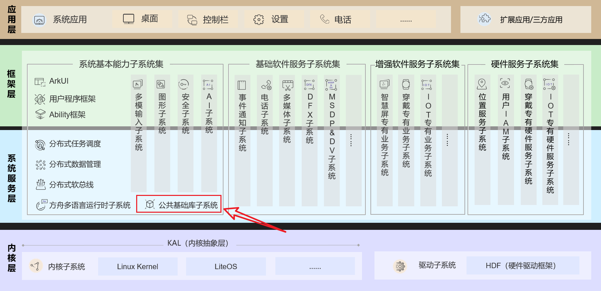
3.3.3 键值存储案例¶
键值存储相关API：
| API名称 | 描述 |
|---|---|
UtilsGetValue |
从文件系统或缓存中读取与key想匹配的value |
UtilsSetValue |
从文件系统或缓存中更新或添加与key匹配的value |
UtilsDeleteValue |
从文件系统或缓存中删除与可以匹配的value |
注意
这一段书中明确指出希望大家学会阅读源码和查看API，其实简单来说就是会查看函数的定义和声明位置，阅读函数注释，获得函数的参数、返回值、基本功能等信息。
我结合STM32HAL库的代码和OpenHarmony源码谈一谈自己的经验：
首先，有一点代码规范不同，STM32的函数注释写在 函数的定义处 ，而OpenHarmony的函数注释写在 函数声明处 。
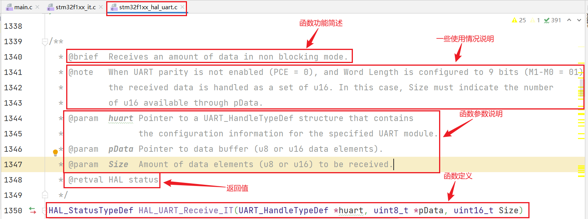
在Vscode中函数位置右键，转到声明：
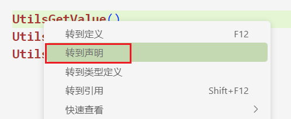
OpenHarmony源码注释与STM32类似，所以不在解释，自行阅读源码理解各参数。
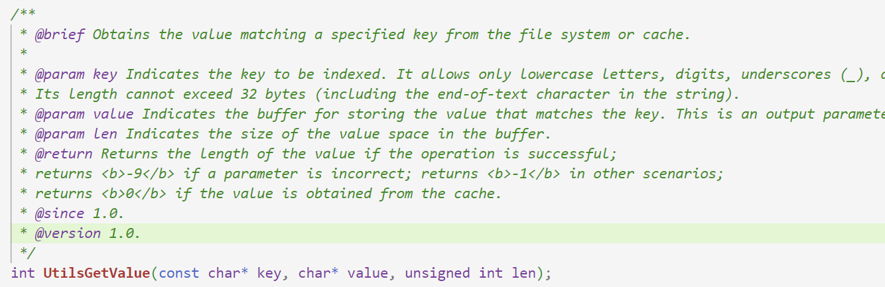
API表格便是根据源码注释汇总，而非照搬书中，我们应更好的理解英文原意，特别是像key、value这种专业术语翻译是无法正确翻译出来的，这时最后就是不翻译，所以基础的英语功底是必须的。
由于value和key涉及到字节数，这里补充一点C语言基础：
| 类型 | 字节数（32 位系统） | 字节数（64 位系统） |
|---|---|---|
char |
1 | 1 |
int |
4 | 4 |
float |
4 | 4 |
double |
8 | 8 |
long |
4 | 8 |
long long |
8 | 8 |
| 指针类型 | 4 | 8 |
注意：实际大小可能因编译器实现或系统架构而异，单片机多为32位，可用 sizeof() 函数检查。
案例目标：若键值不存在就写入一个键值对，若存在则打印这个键值对。
\applications\sample\wifi-iot\app目录下新建kv_store_demo文件夹，并在该文件夹下新建demo.c和BUILD.gn文件，源码如下：
demo.c
# include <stdio.h>
# include "ohos_init.h"
# include "kv_store.h"
C
const char* key = "name";
char* value[32] = {};
void kv_storeTest(void)
{
int retGet = UtilsGetValue(key, value, 32);
if (retGet < 0)
{
const char* valueToWrite = "OpenHarmony.";
int retSet = UtilsSetValue(key, valueToWrite);
printf("SetValue --> result: %d\n", retSet);
}
else
{
printf("GetValue --> result: %d value: %s", retGet, value);
}
}
APP_FEATURE_INIT(kv_storeTest);
BUILD.gn
static_library("kv_store_demo") {
sources = [
"demo.c",
]
include_dirs = [
"//utils/native/lite/include",
]
}
修改\applications\sample\wifi-iot\app目录下的BUILD.gn文件：
import("//build/lite/config/component/lite_component.gni")
lite_component("app") {
features = [
"gn_practice/application:gn_app",
"gn_practice/driver:gn_driver",
"gn_practice/library:gn_library",
"kv_store_demo:kv_store_demo", # 新增内容
]
}
编译烧录，重启开发板，键中无数据，再次重启 “openhamony.”被写入，且断电不丢失。
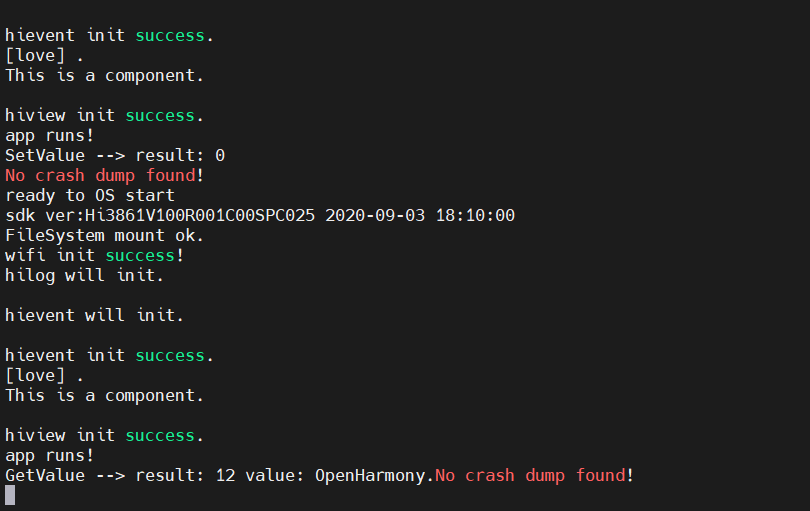
几点说明
关于数据定义为什么是const char*不是char，为什么是int而不是uint16等，均是根据源码定义的形参决定。
3.3.4 文件操作案例¶
如果上一节注意到kv_store.h头文件的位置，就会发现这节需要用到的utils_file.h头文件和它在一个位置，故自行阅读源码理解函数作用。
案例目标：若文件不存在，就创建文件、写入内容（ssid和passwd），若文件存在则读取内容并删除文件。
\applications\sample\wifi-iot\app目录下新建file_demo文件夹，并在该文件夹下新建demo.c和BUILD.gn文件，源码如下：
demo.c
#include <stdio.h>
#include <string.h>
#include "ohos_init.h"
#include "utils_file.h"
void file_demo(void)
{
char filename[] = "wifi_INFO";
unsigned int fileslen=0;
int ret = UtilsFileStat(filename, &fileslen);
if (ret == -1)
{
// 创建写入的数据
const char* dataWrite= "openharmony,123456789";
printf("%s文件不存在。\n", filename);
// 打开文件
int fd = UtilsFileOpen(filename, O_WRONLY_FS|O_CREAT_FS|O_TRUNC_FS, 0);
printf("OpenFile --> result: %d\n", fd);
// 写入数据
int data_len = UtilsFileWrite(fd, dataWrite, strlen(dataWrite));
printf("WriteFile --> result: %d\n", data_len);
// 关闭文件
UtilsFileClose(fd);
}
else
{
printf("%s文件存在。\n", filename);
// 打开文件，读写模式
int fd = UtilsFileOpen(filename, O_RDWR_FS, 0);
printf("OpenFile --> result: %d\n", fd);
// 定位读写偏移量
ret = UtilsFileSeek(fd, 0, SEEK_SET_FS);
printf("SeekFile --> result: %d\n", ret);
// 读取数据
char ssid[32] = {};
int data_len1 = UtilsFileRead(fd, ssid, 11);
printf("ReadFile --> result: %d ssid: %s\n", data_len1, ssid);
// 重新定位读写偏移量
ret = UtilsFileSeek(fd, 1, SEEK_CUR_FS);
printf("SeekFile --> result: %d\n", ret);
// 读取数据
char passwd[32] = {};
int data_len2 = UtilsFileRead(fd, passwd, 9);
printf("ReadFile --> result: %d passwd: %s\n", data_len2, passwd);
// 关闭文件
UtilsFileClose(fd);
// 删除文件
ret = UtilsFileDelete(filename);
printf("DeleteFile --> result: %d\n", ret);
}
}
APP_FEATURE_INIT(file_demo);
BUILD.gn
static_library("file_demo") {
sources = [
"demo.c",
]
include_dirs = [
"//utils/native/lite/include",
]
}
修改\applications\sample\wifi-iot\app目录下的BUILD.gn文件：
import("//build/lite/config/component/lite_component.gni")
lite_component("app") {
features = [
"gn_practice/application:gn_app",
"gn_practice/driver:gn_driver",
"gn_practice/library:gn_library",
"kv_store_demo:kv_store_demo",
"file_demo:file_demo",
]
}
编译烧录运行，复位，文件为空，写入文件。
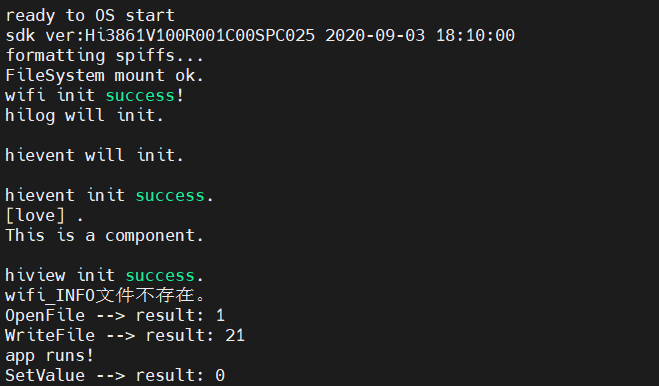
再次复位，读取文件内容。
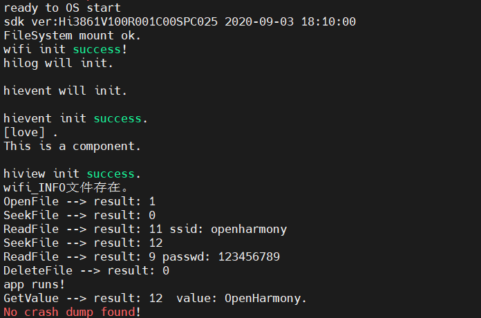